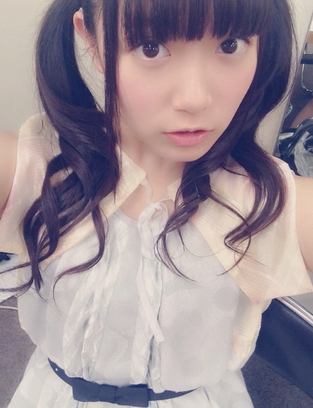
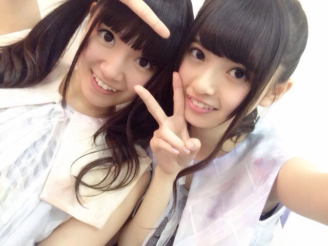
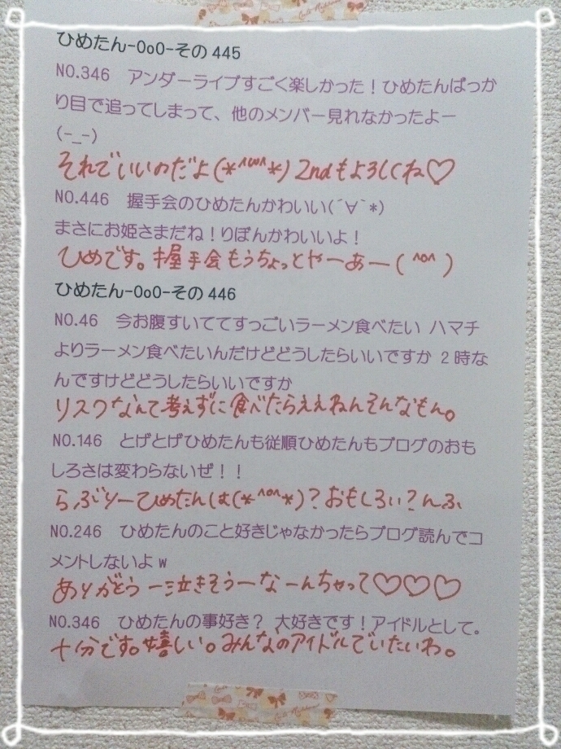
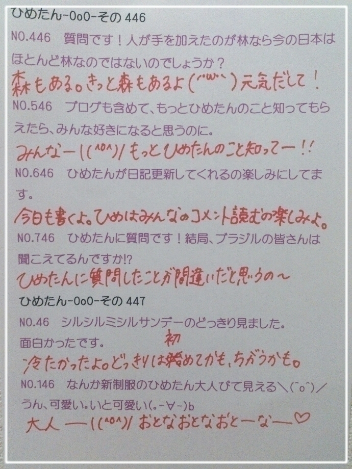

| 2014/09 09 Tue | ひめたん-OoO-その477 |

今日は質問返しのコーナーに
みさせんぱい登場するよ☆
さて告知です！
次回の月刊エンタメさんの
ペアグラビアに
まあやとひめたんが登場します∩(・ω・)∩
わー楽しそう＼(^o^)／＼(^o^)／
発売はまた近くなったら報告するね
お楽しみに～＊

私は上唇が薄いらしい
愛未ちゃんがひめたんにルージュ塗ってくれるんだけど
ちょっと難しいんだってー
そして乃木のの聴いていただけましたか？
#74 伊藤万理華ちゃん・井上小百合ちゃん
あの、何がやりたかったかというと
「ラジオで声しか聞こえないのをいいことに
ありもしない事実を捏造して弄り倒す」的な。
だからハプニング起きまくりでしたねー
伝わりづらくてごめんねー
でもね、伝わらないだろうなって自覚はあるのってか
むしろみんなを「え？」って思わせたかったの(笑)
だって誰も否定しないんだもーん(笑)
でも楽しかったし、仲の良いふたりだから
成せた技だったと思います←フォロー
ちなみに文化放送はお休みの回でした。
#75 秋元真夏ちゃん・衛藤美彩ちゃん
こちらはネット局のみなさんがまだオンエア前なので
あまり詳しいことは言えませんがふたつだけ。
「何度目の青空か？」は「なんぞら」と
略そうって3人の中で決めたよ＼(^o^)／
意見ある人は真夏さんに言ってねー(笑)
真夏さんか美彩せんぱいのブログに
ふたりの仲良さそうな写メが
アップされるはず、そーゆー約束をしましたよー♪
てゆか真夏さんのブログみたけど
ちゅーしちゃうぞはひめたんのーっ(｀・ω・´)笑
次回 #76は永島聖羅ちゃん・畠中清羅ちゃん！
いやー楽しかったー
めっちゃ笑ってるよー聴くの怖いよー
お楽しみに☆

びじねす～
あすかりん今日ちょっといいことあったらしいよ
ひめたんもいいことあったよ
私たちの間で明るい話題になるのは貴重だよー

 ところで、ひめたんの
ところで、ひめたんの
二の腕は、なに味ですか？
この質問多かった！
ひめたんの味？？
それは...
教えるのは 君たちにはまだ早い(*・〜・*)
なんせ私もこの二の腕に辿り着くまでに3年かかったのだ。
もう少しこの味を独り占めさせてくれ。
以上みさ先輩より。
みさ先輩のにのうで食べたいぼくは
どうすればいいのでしょうか？？
みさせんぱいの味は
みさみさーくるさんじゃないと確かめられない と
みさせんぱいから伝言を預かりました
せんぱいの にのうでは みんなのものだ！
ひめたんが全力で阻止する( ºωº )
ひめたん、初めてきゅんきゅん王国を訪ねます、
これから訪ねる際には、
何を持ってくればよいでしょうか？
いちばんは素直な心、かな
ひめたんびーむされて「わ～ \( ˆoˆ )/ 」ってなるくらい
心のやさしいひと大歓迎ですよー
ちなみに最近メンバーの中で
まいちゅんにもびーむ効くみたい♡
カラオケで乃木坂ちゃんの歌の途中に
ひめたんびーむやったら盛大に滑ったんじゃけど、
この責任はどがいにして払うてくれるん？
ちなみにそのお陰で
ただでさえ長いコウモリよの間奏が
凍りついたんじゃがん(笑)
スベったことは知らないけど
コウモリよを歌うとは......！
いやーレベル高いね(｀・ω・´)ﾅｲｽﾁｮｲｽ
ひめたんビーム学校でやってたら流行りました！
ほら！これだよこれ！
ひめはこーゆー報告を待ってるんだよ
みんなよろしくね\❁/
男なんだけどどうやったら
乃木坂のメンバーになれるの？
やっぱりまいやんみたいな美貌がないと
だめなのかな？
それともひめたんのようなびーむ力？
その枠はもう空いてないから
もっとほかのところを狙ったらいいんじゃない？
あとは募集要項というものがあってですね
宿題が終わんないよ～
ひめたんを1日召使いとして扱ってもいいですか？
嫌だし、ひめたんを1日雇ったところで
終わらないと思うよ(´・ω・｀)
先生に泣き落としするならついてくよ
最後にひめたんのパパ、ママ、
お誕生日おめでとうございます!!
ささやかですが
俺をプレゼントしたいと思います(笑)
これちょっと好きだわ～
ぱぱまま喜ぶ喜ばないは置いといて
ちょっと好きだわ～
ひめたん、肌スベスベだけど、牛一気飲みとかする？
うん、ちょっと一回落ち着こうか。
ひめたんの日記の
コメント欄下２ケタに46を踏んだ方へ
手書きでコメ返するコーナー
＼ ひめたん46 ／


いつもたくさんのコメント
ありがとうございます
今週末は久々に握手会があるねー
久々すぎて今から楽しみだよー！
行くよーって方はもうちょっと待っててね～
なんかねー質問返してたら
久々にみんなに質問したくなってきた(っ´ω`c)
てことで次回ひめたんからの質問コーナーするね♪
(＊´・ω・＊)
コメント(672)
2014/09/09 23:37